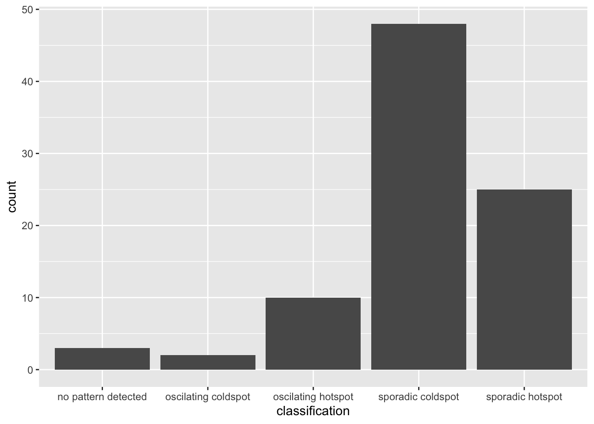
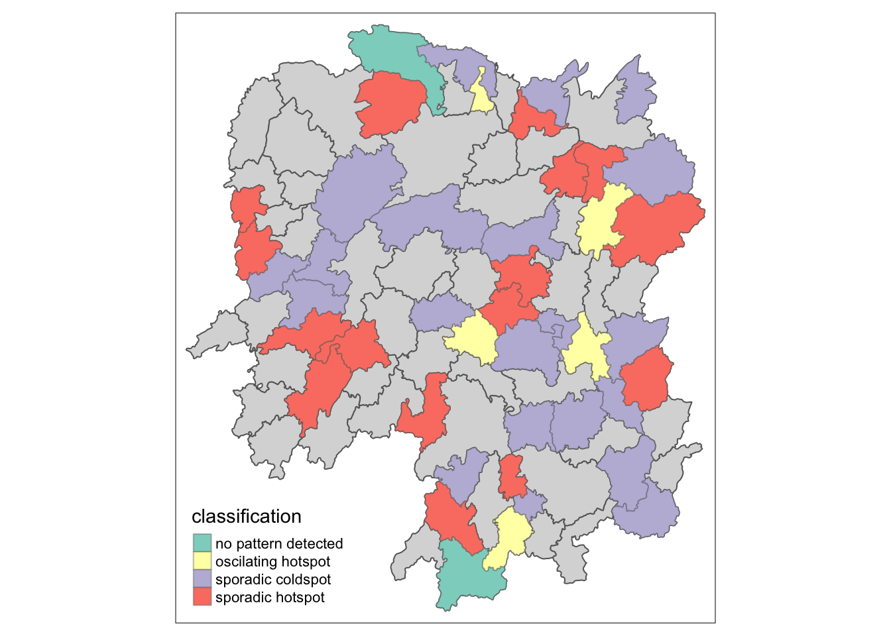

pacman::p_load(tmap, sf, sfdep, tidyverse, knitr,plotly)In-class Exercise 2
EXERCISE 1:
1. Getting Started
1.1 Install and launching R packages
The code chunk below load the following packages:
tmap : for thematic mapping
sf : for geospatial data handling
sfdep : for spatial dependence for Simple Features
tidyverse: for non-spatial data handling
knitr : for dynamic report generation
plotly : for creating interactive graphs
1.2 Importing the OD data
We will be using two data sets for this exercise. Data were retrieved on 25th Nov 2023. They are :
- Hunan , a geospatial data set in ESRI shapefile format, and
- Hunan_2012.csv, an attribute data set in csv format
In this exercise, we are interested to examine the spatial pattern of GDPPC (a.k.a GPD per Capital) of Hunan Provice, People Republic of China.
1.2.1 Importing geospatial data
The code chunk below uses st_read() of sf package to import the 1st data set into R. The imported shapefile will be simple features object of sf.
hunan <- st_read(dsn = "data/geospatial",
layer = "Hunan")Reading layer `Hunan' from data source
`/Users/smu/Rworkshop/jiawenoh/ISSS624/In-class_Ex/In-class_Ex02/data/geospatial'
using driver `ESRI Shapefile'
Simple feature collection with 88 features and 7 fields
Geometry type: POLYGON
Dimension: XY
Bounding box: xmin: 108.7831 ymin: 24.6342 xmax: 114.2544 ymax: 30.12812
Geodetic CRS: WGS 841.2.2 Importing attribute table
Next, we will import the 2nd dataset (csv) into R. We will use read_csv() of readr package. The output is in R dataframe class.
hunan2012 <- read_csv("data/aspatial/Hunan_2012.csv")1.3 Performing relational join
After importing, we will performed a left_join() with the aid of dplyr package.
hunan_GDPPC <- left_join(hunan,hunan2012) %>%
select(1:4,7,15)1.4 . Plotting a choropleth map
We will be using the qtm() of tmap package to prepare a basemap and a choropleth map to see the distribution of GDPPC 2012 as a form of quick visualization.
Show the code
basemap <- tm_shape(hunan_GDPPC) +
tm_polygons() +
tm_text("NAME_3", size=0.5)
gdppc <- qtm(hunan_GDPPC, "GDPPC")
tmap_arrange(basemap, gdppc, asp=1, ncol=2)
2. Deriving contiguity weights: Queen’s method
Queen method is used to derive the contiguity weights:
wm_q <- hunan_GDPPC %>%
mutate (nb = st_contiguity(geometry),
wt = st_weights(nb,
style = "W"),
.before = 1)3. Compute local Moran’s I
In the code chunk below, we will compute local Moran’s I test.
lisa <- wm_q %>%
mutate(local_moran = local_moran(
GDPPC, nb, wt, nsim = 99),
.before =1) %>%
unnest(local_moran) #to unnest individual columns EXERCISE 2:
1. Importing the data
We will be using the Hunan_GDPPC data for this exercise.
GDPPC <- read_csv("data/aspatial/Hunan_GDPPC.csv")2. Create a time series cube
To get the concept of spatio-temporal cube, we will be using the spacetime() of sfdep to create a spacetime cube.
GDPPC_st <- spacetime(GDPPC, hunan,
.loc_col = "County",
.time_col = "Year")To confirm if it is spacetime cube, we can check through the following code by using is_spacetime_cube() of sfdep package:
is_spacetime_cube(GDPPC_st)[1] TRUE3. Compute Gi*
GDPPC_nb <- GDPPC_st %>%
activate("geometry") %>% #must-do this first to activate
mutate(nb = include_self(st_contiguity(geometry)),
wt = st_inverse_distance(nb,geometry,
scale = 1,
alpha = 1),
.before = 1) %>%
set_nbs("nb") %>%
set_wts("wt")We can use the new columns to manually calculate the local Gi*. We can do so by grouping by year and using local_gstar_perm() of spdep. Thereafter, we will use unnest() to unnest gi_star column of the newly created gi_starts data frame.
gi_stars <- GDPPC_nb %>%
group_by(Year) %>%
mutate(gi_star = local_gstar_perm(
GDPPC, nb, wt)) %>%
tidyr::unnest(gi_star)4. Mann-Kendall Test
With these Gi* measures, we can evaluate each location for a trend using the Mann-Kendall test. The code chunk below uses Changsha county.
cbg <- gi_stars %>%
ungroup() %>%
filter(County == "Changsha") |>
select(County, Year, gi_star)Next, we will plot the result by using ggplot2 functions.
p <- ggplot(data = cbg,
aes(x = Year,
y = gi_star)) +
geom_line() +
theme_light()
ggplotly(p)Note: we could need to install kendall package. (Install packages via tools > cran as I am not able to run on pacman due to version issues)
cbg %>%
summarise(mk = list(
unclass(
Kendall::MannKendall(gi_star)))) %>%
tidyr::unnest_wider(mk)# A tibble: 1 × 5
tau sl S D varS
<dbl> <dbl> <dbl> <dbl> <dbl>
1 0.485 0.00742 66 136. 589.5. Perform Emerging Hotspot Analysis
Lastly, we will perform EHSA analysis by using emerging_hotspot_analysis() of sfdep package. It takes a spacetime object c (i.e GDPPC_st), and the quoted name of the variable of interest (i.e. GDPPC) for .var argument. The k argument is used to specify the number of time lags which is set to 1 by default. Lastly, nsim map numbers of simulation is performed.
ehsa <- emerging_hotspot_analysis(
x = GDPPC_st,
.var = "GDPPC",
k = 1,
nsim =99
)ggplot(data = ehsa,
aes(x = classification)) +
geom_bar()
We could observe that the sporadic coldspot has the higher number of county.
Visualizing EHSA
We will visualize the geographic distribution EHSA classes. Before we do so, we will need to join both hunna and ehsa together.
hunan_ehsa <- hunan %>%
left_join(ehsa,
by = join_by(County == location))Next, tmap functions will be used to plot a categorical choropleth map by using the code chunk below.
ehsa_sig <- hunan_ehsa %>%
filter(p_value <0.05)
tmap_mode("plot")
tm_shape(hunan_ehsa) +
tm_polygons() +
tm_borders(alpha =0.5) +
tm_shape(ehsa_sig) +
tm_fill("classification") +
tm_borders(alpha = 0.4)